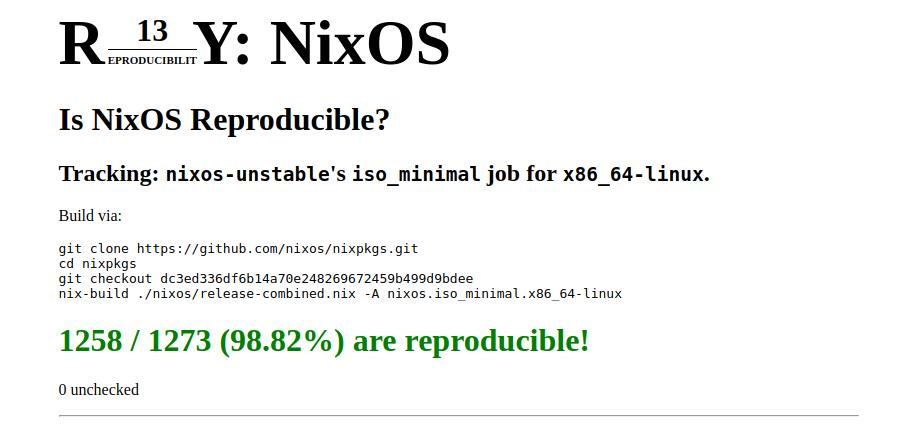

Sane System Management with NixOS
I Do Declare!
Overview
- $(whoami)
- State of the System
- What if?
- Nix
- Nixpkgs
- NixOS
- NixOps
- Encore: Python
- Encore: Haskell
- Tim Steinbach
- Senior Software Developer
- Advanced Threat Analytics
- eSentire Inc, Ontario, Canada
- @Tim_Steinbach
- NeQuissimus
Windows / macOS
- Trust the packages
- Largely closed-source
- In-place updates
- Global libraries
- Manual install/setup
Linux
- In-place updates
- Global libraries
- Manual install/setup
Configuration
- Registry
- C:\Users\USER\AppData\Local
- C:\Users\USER\AppData\LocalLow
- C:\Users\USER\AppData\Roaming
- C:\Users\USER\Documents
- C:\Program Files
- C:\ProgramData (== C:\Users\All Users\Application Data)
Configuration
- /Library/Application Support
- ~/Library/Application Support
- ~/Library/Preferences
Configuration
- /etc
- /usr/share
- /opt
- ${HOME}
- ${XDG_CONFIG_HOME}
- ${XDG_CACHE_HOME}
- ${XDG_DATA_HOME}
Configuration
- XML?
- JSON?
- SQLite?
- plist?
- Key-Value-Pair?
- Binary blob?
Install*
- Overview
- Requirements
- Boot from USB flash drive
- Prepare to install Ubuntu
- Allocate drive space
- Begin installation
- Select your location
- Login details
- Background installation
- Installation complete
Install packages, configure environment, download favourite wallpaper, ...
What if?
- All configuration in one place
- Applications bring the dependencies they need
- (Re-)Installation within minutes
- Software built from source, with binary cache
- Bitwise reproducibility of the entire system
Nix
Nix is a package manager that makes package management reliable and reproducible*
- Atomic upgrades
- Atomic rollbacks
- Multi-user package management
- Side-by-side installation of different versions of the same package
- Runs on any Linux, OSX, Windows
Nix
~ λ nix-env -iA nixos.haskell.compiler.ghc822
~ λ readlink -e $(type -p ghci)
/nix/store/ff35xk44xaqlfdbigafls4683rp6kfh1-ghc-8.2.2/bin/ghci-8.2.2
~ λ nix-env -iA nixos.haskell.compiler.ghc864
~ λ readlink -e $(type -p ghci)
/nix/store/8vq01xmxlp9wxzilkw85rb621ag7nwmd-ghc-8.6.4/bin/ghci-8.6.4
~ λ type -p ghci
ghci is /home/nequi/.nix-profile/bin/ghci
Nix
~ λ nix-env -q
ghc-8.6.4
openjdk-11.0.2-b9-headless
unzip-6.0
~ λ ls -1 /home/nequi/.nix-profile/bin/java
/home/nequi/.nix-profile/bin/java -> /nix/store/wf5msw8an2k1r97k4zxiblr7dlw5y394-openjdk-11.0.2-b9/bin/java
~ λ nix-env --rollback
switching from generation 138 to 137
~ λ nix-env -q
ghc-8.6.4
openjdk-8u212-ga
unzip-6.0
~ λ ls -1 /home/nequi/.nix-profile/bin/java
/home/nequi/.nix-profile/bin/java -> /nix/store/lfiic1z2sws6b4z37vhy1iyjw0cg5xma-openjdk-8u212-ga/bin/java
BYOD*
~ λ ldd $(readlink -e $(type -p java)) | head -5
linux-vdso.so.1 (0x00007ffd08301000)
libpthread.so.0 => /nix/store/681354n3k44r8z90m35hm8945vsp95h1-glibc-2.27/lib/libpthread.so.0 (0x0000774c134c2000)
libz.so.1 => /nix/store/iiymx8j7nlar3gc23lfkcscvr61fng8s-zlib-1.2.11/lib/libz.so.1 (0x0000774c134a3000)
libjli.so => /nix/store/06qhys2248snhhmi9mqgbrrbq4qqpyk0-openjdk-8u212-ga-jre/lib/openjdk/jre/lib/amd64/jli/libjli.so (0x0000774c1348c000)
libdl.so.2 => /nix/store/681354n3k44r8z90m35hm8945vsp95h1-glibc-2.27/lib/libdl.so.2 (0x0000774c13487000)
BYOD*
~ λ nix-store -q --tree $(readlink -e $(type -p ghci)) | head -10
/nix/store/8vq01xmxlp9wxzilkw85rb621ag7nwmd-ghc-8.6.4
+---/nix/store/681354n3k44r8z90m35hm8945vsp95h1-glibc-2.27
| +---/nix/store/681354n3k44r8z90m35hm8945vsp95h1-glibc-2.27 [...]
+---/nix/store/0y7jmqnj48ikjh37n3dl9kqw9hnn68nq-binutils-2.31.1
| +---/nix/store/681354n3k44r8z90m35hm8945vsp95h1-glibc-2.27 [...]
| +---/nix/store/iiymx8j7nlar3gc23lfkcscvr61fng8s-zlib-1.2.11
| | +---/nix/store/681354n3k44r8z90m35hm8945vsp95h1-glibc-2.27 [...]
| +---/nix/store/0y7jmqnj48ikjh37n3dl9kqw9hnn68nq-binutils-2.31.1 [...]
+---/nix/store/7mrq5v4nnqfkv1ka7a0kdw9mzvqs5w3c-gmp-6.1.2
| +---/nix/store/681354n3k44r8z90m35hm8945vsp95h1-glibc-2.27 [...]
Nix Shell
~ λ nix-shell -p kafkacat
[nix-shell:~]$ kafkacat -V
kafkacat - Apache Kafka producer and consumer tool
https://github.com/edenhill/kafkacat
Copyright (c) 2014-2015, Magnus Edenhill
Version 1.3.1 (JSON) (librdkafka 1.0.0 builtin.features=gzip,snappy,ssl,sasl,regex,lz4,sasl_plain,sasl_scram,plugins)
nixpkgs
- GitHub repo*
- ~180,000 commits
- >2,000 contributors
- >50,000 packages+
- ~50,000 Pull Requests
- MIT licensed
nixpkgs
One of the top 5 GitHub repositories*+
- Kubernetes
- Spark
- Visual Studio Code
- Nixpkgs
- Rust
Hydra
- Continuous integration
- Pushes channel updates
- Various jobsets
NixOS
NixOS is a Linux distribution with a unique approach to package and configuration management. Built on top of the Nix package manager, it is completely declarative, makes upgrading systems reliable, and has many other advantages.*
Reproducibility*

Install*
- Booting the system
- Partitioning and formatting
- Installing
# gdisk
# mkfs.ext4
# mount
# curl configuration.nix || nixos-generate-config
# nixos-install
Done
Configuration
boot.kernel.sysctl = {
"vm.dirty_background_ratio" = 20;
"vm.dirty_ratio" = 30;
"vm.dirty_writeback_centisecs" = 500;
"vm.dirty_expire_centisecs" = 3000;
"vm.drop_caches" = 1;
"vm.swappiness" = 1;
"vm.vfs_cache_pressure" = 60;
};
hardware = {
pulseaudio.enable = true;
u2f.enable = true;
};
virtualisation.docker = {
enable = true;
extraOptions = ''--config-file=/etc/docker-daemon.json'';
};
Configuration
environment.systemPackages = with pkgs; [
autocutsel
bat
binutils
conky
exa
feh
git
gnupg1compat
htop
i3lock-fancy
jq
oh-my-zsh
ripgrep
rofi
skopeo
(vivaldi.override { proprietaryCodecs = true; })
];
On-the-fly updates
~ λ sudo nixos-rebuild switch --upgrade
[sudo] password for nequi:
unpacking channels...
building Nix...
building the system configuration...
[...]
activating the configuration...
setting up /etc...
reloading user units for nequi...
setting up tmpfiles
reloading the following units: dbus.service
restarting the following units: polkit.service
starting the following units: accounts-daemon.service, cups-browsed.service, cups.service, systemd-udevd-control.socket, systemd-udevd-kernel.socket, tlp.service
Try before you buy
QEMU VM from system configuration
~ λ nixos-rebuild build-vm
[...]
Done. The virtual machine can be started by running /nix/store/p77x20ar4869991nkq3h0f8n9w08jhjz-nixos-vm/bin/run-nixus-desktop-vm
Cloud/Cluster Deployments
{
webserver =
{ deployment.targetEnv = "virtualbox";
services.httpd.enable = true;
services.httpd.documentRoot = "/data";
fileSystems."/data" =
{ fsType = "nfs4";
device = "fileserver:/"; };
};
fileserver =
{ deployment.targetEnv = "virtualbox";
services.nfs.server.enable = true;
services.nfs.server.exports = "...";
};
}
Packaging
λ bat default.nix -p
with import <nixpkgs> {};
with python37Packages;
buildPythonPackage rec {
name = "mypackage";
src = ./source;
propagatedBuildInputs = [ pytest numpy pkgs.libsndfile ];
}
Building
λ nix-build .
[...]
checking for references to /build/ in /nix/store/svqqr1cbjfw2ymn8jx7ds073yw2sxlni-python3.7-mypackage...
running install tests
running test
running egg_info
writing foo.egg-info/PKG-INFO
writing dependency_links to foo.egg-info/dependency_links.txt
writing requirements to foo.egg-info/requires.txt
writing top-level names to foo.egg-info/top_level.txt
package init file 'foo/__init__.py' not found (or not a regular file)
reading manifest file 'foo.egg-info/SOURCES.txt'
writing manifest file 'foo.egg-info/SOURCES.txt'
running build_ext
----------------------------------------------------------------------
Ran 0 tests in 0.000s
OK
pytestcachePhase
/nix/store/svqqr1cbjfw2ymn8jx7ds073yw2sxlni-python3.7-mypackage
Building (again)
λ nix-build .
/nix/store/svqqr1cbjfw2ymn8jx7ds073yw2sxlni-python3.7-mypackage
Shell from package
λ nix-shell ./default.nix
[nix-shell:/tmp]$ python3
Python 3.7.3 (default, Mar 25 2019, 20:59:09)
[GCC 7.4.0] on linux
Type "help", "copyright", "credits" or "license" for more information.
>>> import pytest
>>> pytest.fail("HAHA")
Traceback (most recent call last):
File "", line 1, in
File "/nix/store/9a0b0mrlmdscpl007hk5s4l6334wzvm9-python3.7-pytest-4.2.1/lib/python3.7/site-packages/_pytest/outcomes.py", line 113, in fail
raise Failed(msg=msg, pytrace=pytrace)
Failed: HAHA
Shell
λ nix-shell -p python3 -p python3Packages.pytest
[nix-shell:/tmp]$ python3
Python 3.7.3 (default, Mar 25 2019, 20:59:09)
[GCC 7.4.0] on linux
Type "help", "copyright", "credits" or "license" for more information.
>>> import pytest
>>>
Shell
λ nix-shell -p "haskellPackages.ghcWithPackages (pkgs: [pkgs.mtl])"
[nix-shell:/tmp]$ ghci
GHCi, version 8.6.5: http://www.haskell.org/ghc/ :? for help
Prelude> import Control.Monad.Except
Prelude Control.Monad.Except> import Control.Monad.Trans
Prelude Control.Monad.Except Control.Monad.Trans>
Stack
With Nix enabled, stack build and stack exec will automatically launch themselves in a local build environment (using nix-shell behind the scenes)+
λ bat stack.yaml -p
resolver: lts-13.20
nix:
enable: true
shell-file: shell.nix
# path: [nixpkgs=/my/own/nixpkgs/clone]
packages:
- .
Stack (Shell)
λ bat shell.nix -p
{ghc}:
with (import {});
haskell.lib.buildStackProject {
inherit ghc;
name = "myEnv";
buildInputs = [ zlib ];
}